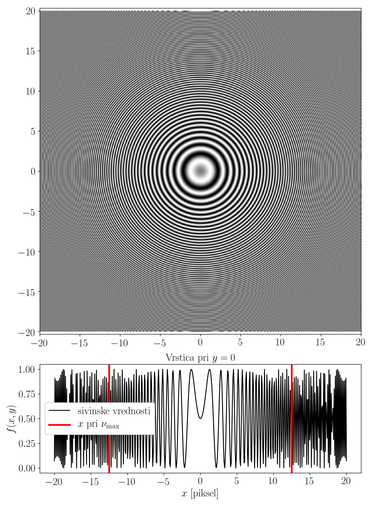
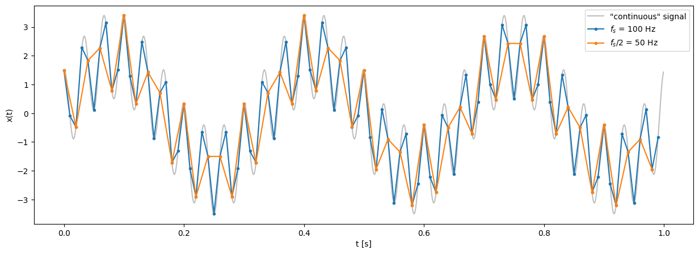
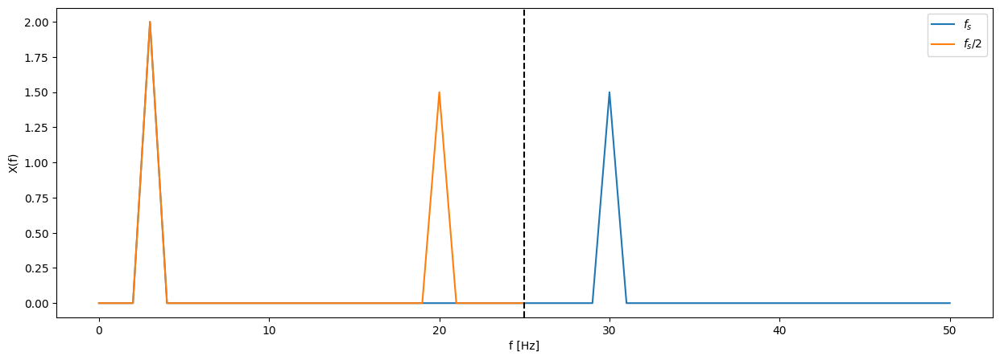
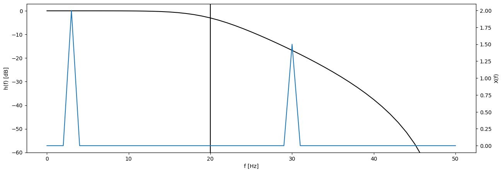
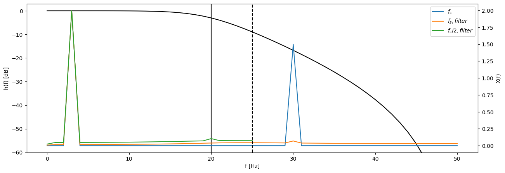
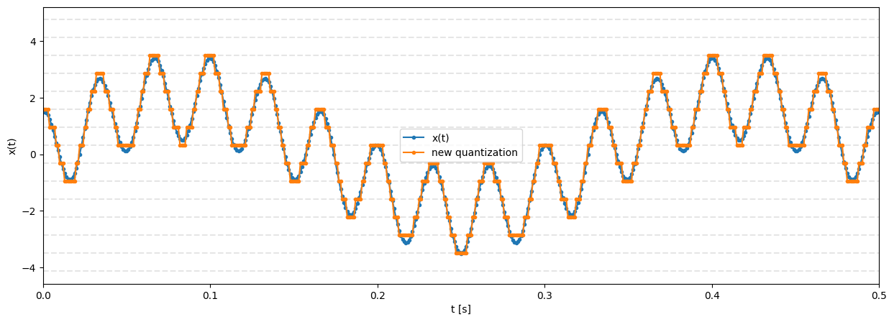
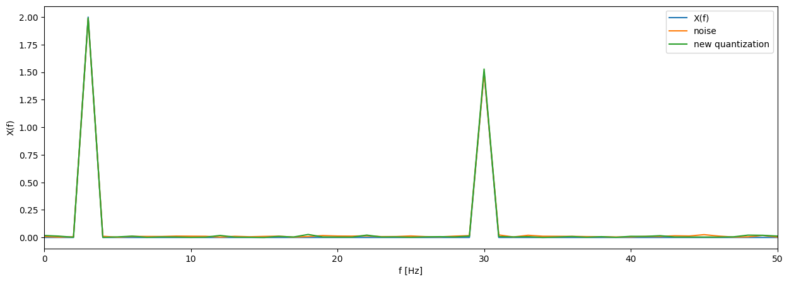
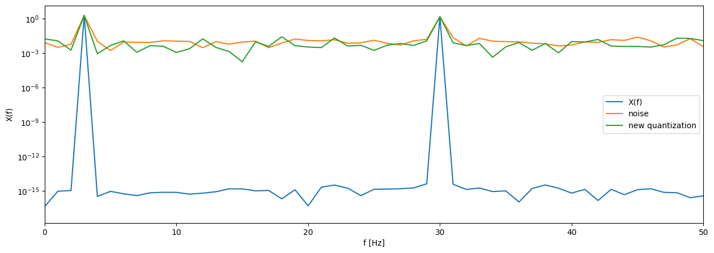

Uniform sampling and quantization#
When processing measured data, we deal with discretely sampled signals. It is important to be aware of the properties of the discretization of otherwise continuous time signals. We will look at its basics in this exercise.
Task#
Homework
Using the signal generator and the Arduino acquisition system, prepare the signal(s) with which you will demonstrate the property of signal discretization given in your assignment data (aliasing due to inadequate sampling or quantization error of the signal). When generating and acquiring the signals, use the parameters prescribed in the data, and determine the missing parameters in accordance with the prescribed property of discretization.
Addendum: Prepare the signal(s) so that you can also show the other of the two discussed properties of discretization (time sampling or quantization). Comment briefly on this as well.
You can download the LabVIEW signal acquisition program as a zip archive.
To make the work on the signal generator as efficient as possible, you can first try out the selected signal and acquisition parameters with a numerical simulation. Use the examples in this template and the scipy.signal module to help you.
Prepare a short report (3 to 10 code cells in a Jupyter Notebook) that shows the assignment data (from the table) and that you took all the parameters and requirements of the assignment into account. Show the influence of the given property of discretization with short comments, supported by theoretical background.
Submit the report in .pdf format (see the instructions for submitting homework).
Signal discretization#
Discretization is the process in which a variable that is continuous in time is converted into discrete values suitable for representation in computer memory. It consists of two separate processes, sampling and quantization.
Uniform time sampling#
Sampling is the process of discretizing the independent variable (time) of a continuous process.
The main parameter of time sampling is the sampling interval (period) \(\Delta t\), which defines the sampling frequency \(f_s = 1 / \Delta t\).
The continuous time signal is thus sampled at the discrete time values \(n \, \Delta t\).
Note
Recall: the Fourier transform of a signal \(x(t)\) sampled with period \(\Delta t\) is defined as the sum:
and in the frequency domain it is periodic with frequency \(f_s\):
Aliasing#
A consequence of the periodicity of the Fourier transform of a discrete signal is that the frequency components of the signal above \(f_s/2\) are folded across the limit \(f_s/2\) and cause so-called aliasing. This produces anomalies in the discretely sampled signal.
Nyquist frequency#
The frequency \(f_N = f_s / 2\) is thus the highest frequency in the discretized signal that can still be adequately represented at the chosen \(f_s\). It is also called the Nyquist frequency.
By choosing the sampling interval \(\Delta t = 1 / f_s\), we therefore determine the frequency range \([0, f_s / 2]\) that can be observed in the measured signal.
Note
The phenomenon of aliasing is interesting to observe in digital images, where the independent variable is distance (height, width of the image) and we speak of the spatial frequency \(\upsilon\).

Task 1 (10 minutes)
For the signal:
\(x(t) = X_1 \, \sin(2\pi \, f_1 \, t) + X_2 \, \cos(2\pi \, f_2 \, t)\)
simulate sampling with the sampling frequency \(f_s\) and then with the sampling frequency \(f_s / 2\).
Plot both time series, and comment on the phenomenon of aliasing by plotting the amplitude spectra of both signals.
Data:
fs = 100 # Hz
f_1 = 3 # Hz
f_2 = 30 # Hz
X_1 = 2
X_2 = 1.5
t_c = np.arange(0, T, dt/10)
x_c = X_1*np.sin(2*np.pi*f_1*t_c ) + X_2*np.cos(2*np.pi*f_2*t_c )


Filtering to prevent aliasing#
Aliasing of a measured signal can be prevented by low-pass filtering (anti-aliasing filter), which must be carried out before the time sampling of the signal.
Task 2 (10 minutes)
On the above example of the signal \(x(t)\), let us demonstrate the use of anti-aliasing filtering with scipy.signal.
from scipy import signal
Preparing a digital low-pass filter:
f_cutoff = 20
sos = signal.butter(3, f_cutoff, 'low', analog=False, fs=fs, output='sos')
w, h = signal.sosfreqz(sos, freq, whole=False, fs=fs)

Filtering the signal
x_filtered = signal.sosfiltfilt(sos, x)
x_f_2 = x_filtered[::2]
X_f = np.fft.rfft(x_filtered) / len(x_filtered)
X_f[1:] *= 2
X_f_2 = np.fft.rfft(x_f_2) / len(x_f_2)
X_f_2[1:] *= 2

Quantization#
Quantization is the process of discretizing the dependent variable of a continuous process \(x(t)\).
The main parameter of time sampling is the number of discrete levels that the dependent variable can take in the quantization process, which determines the dynamic range (depth) of the process. It is usually given by the number of bits \(b\) of the ADC. The quantization range \(A = x_{\text{max}} - x_{\text{min}}\) is also important here. It defines the interval of possible values of the independent variable \(x \in [x_{\text{min}}, x_{\text{max}}]\).
The number of discrete values of the quantized signal is:
The quantization error can be modeled as random noise with a uniform distribution in the interval \([-\frac{A/2^b}{2}, \frac{A/2^b}{2}]\), with standard deviation:
The dynamic range of a measurement is determined by the ratio between the useful signal and the noise (quantization error), the SNR (Signal-to-Noise Ratio):
(assuming \(\sigma_x = A/4\), so that we do not reach the limits of the allowed interval of the independent variable).
Task 3 (10 minutes)
On the example of the signal \(x(t)\) from Task 1, let us simulate the influence of signal quantization with the parameters:
\(x \in [-20, 20]\\\) \(b = 6\)
adc_range = [-20, 20]
A = np.max(adc_range) - np.min(adc_range)
b = 6
std_e = (A/2**b) / np.sqrt(12)
std_x = A/4
SN = 10 * np.log10(std_x**2 / std_e**2)
SN
np.float64(34.874212113594744)
6*b - 1.25
34.75
def kvantizacija(x, bits=4, adc_range=(-20, 20)):
"""
Quantization of the signal `x` with the selected parameters (from the lectures).
"""
x2 = x.copy()
lo, hi = adc_range
x2[x<=lo] = lo
x2[x>=hi] = hi
delta = (hi - lo) / (2**(bits)-1)
qnt = lo + delta*np.round((x2 - lo) / delta)
# for a simple display of the discrete quantization levels
levels = np.arange(np.min(qnt) - delta, np.max(qnt) + 2*delta, delta)
return qnt, levels
Quantized signal
x_kvantiziran, nivoji = kvantizacija(x_c, b, adc_range)
Signal with noise
def uniform_noise(size, sigma):
a = sigma * np.sqrt(3)
return np.random.uniform(-a, a, size)
x_šum = x_c + uniform_noise(len(x_c), std_e)

Calculating the amplitude spectra of the signals to show the quantization error:
X = np.fft.rfft(x_c) / len(x_c)
X[1:] *= 2
X_k = np.fft.rfft(x_kvantiziran) / len(x_kvantiziran)
X_k[1:] *= 2
X_šum = np.fft.rfft(x_šum) / len(x_šum)
X_šum[1:] *= 2
freq_c = np.fft.rfftfreq(len(t_c), t_c[1]-t_c[0])

